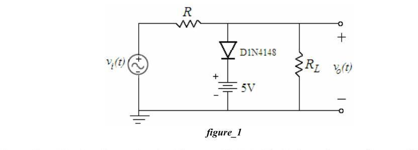
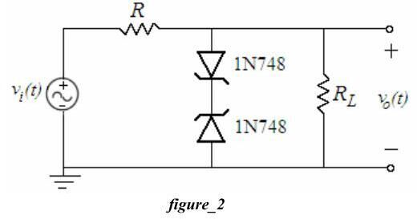
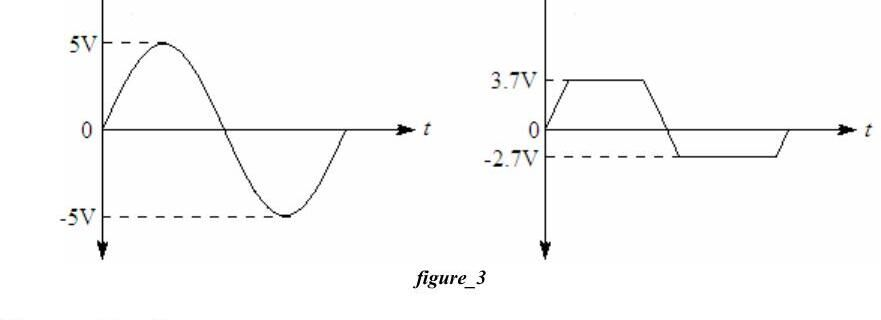
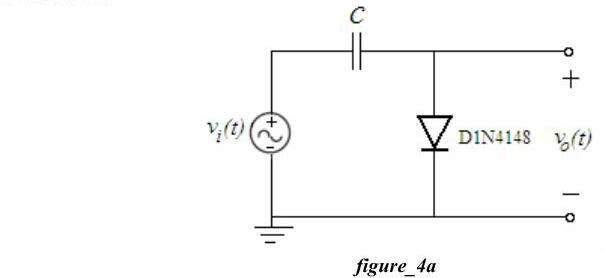
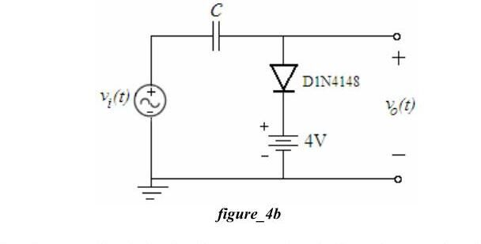
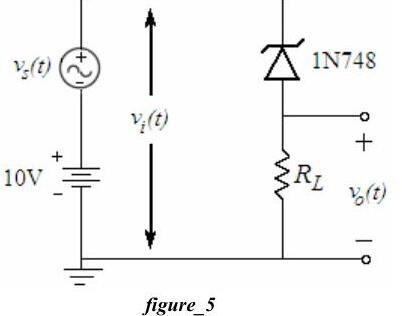
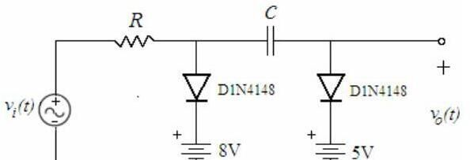

· EEM214
EEM214 Electronics I: Experiment 5 – Diode Clipping and Clamping Circuits (Lab Sheet and Student Work)
EEM214 – Elektronik I · 12.02.2006 · 16.10.2026
This post brings together the lab sheet (February 2006) for Experiment 5: Diode Clipping & Clamping Circuits of the Başkent University EEM 214 Electronics I laboratory, along with student pre-lab work and reports prepared for this experiment between 2005 and 2014. Most of the student work belongs to friends; names and student numbers have been redacted. Among it is a one-page solution prepared by Hasan Can Öztürk in 2013 (student number redacted). Since the lab sheet is in English, its text is carried over in English. A password-free copy of the lab sheet and the student work can be downloaded as a ZIP at the end of the post.
Lab Sheet: Experiment 5 – Diode Clipping & Clamping Circuits
Aim: The purpose of this experiment is to investigate the application of diodes in clipping and clamping circuits.
Theory: In addition to their use as rectifiers and voltage regulators, diodes are frequently used in wave-shaping circuits, detectors, protection circuits and switching circuits. Two widely used applications are investigated: diode limiter (clipper) circuits and diode clamping (DC restorer) circuits. Clipping circuits prevent a waveform from exceeding some particular limit, either negative or positive; this is achieved by realizing that when a diode is conducting, its voltage drop is constant and nearly equal to 0.7 V. Clamping circuits shift the DC level of a waveform: when a signal passes through a capacitor its DC component is blocked, and a clamping circuit can restore the DC level, which is why these circuits are sometimes called DC restorers.
Preliminary work
- Review section 3.19 of the textbook.
- a) For the clipper of Fig. 1 draw input and output on the same plot, using the constant-voltage-drop model, v_i(t) = 10 sin(200πt), R = 1 kΩ and R_L = 47 kΩ. Simulate in PSpice; vary the DC voltage and explain its effect. Are the minimum values of input and output the same? Why? b) Reverse the diode, replace the positive supply with a negative one and repeat.
- a) For the clipper with Zener diodes of Fig. 2 draw the input, the output and the voltage across each Zener (same source and resistors) and simulate. b) Reverse both Zeners; does the output change? Why?
- Design: Using the constant-voltage-drop diode model, resistors and batteries, design a circuit that produces the clipped output of Fig. 3 (a 5 V peak sine clipped at +3.7 V and −2.7 V); verify with PSpice.
- a) For the clamper of Fig. 4a (v_i(t) = 10 sin(200πt), C = 1 µF) draw input and output; what is the DC value of the output? Obtain the average with PSpice "add trace". b) Do the same for Fig. 4b (C = 47 µF, 4 V battery in series with the diode) and vary the DC voltage. c) Reverse the diode in Fig. 4b and repeat.
- For the clamper with Zener diode of Fig. 5 (v_s(t) = 2 sin(200πt) on top of 10 V DC, 1N748, R_L = 1 kΩ) draw input and output and simulate.
- Read the experimental work.







Experimental work
- a) Set up Fig. 1 with a 100 Hz, 20 V peak-to-peak input, R = 1 kΩ, R_L = 47 kΩ; plot input and output (DC coupling). b) Reverse the diode, use a negative DC supply and repeat. Does the output change? Why?
- a) Set up Fig. 2 with the same input; plot the input, the output and the Zener voltages. b) Reverse the upper Zener and repeat; do the output and the Zener voltages change? Why?
- Set up the circuit designed in preliminary part 4 with a 100 Hz, 10 V peak-to-peak input and plot input and output.
- a) Set up Fig. 4a (100 Hz, 20 V peak-to-peak, C = 1 µF). b) Set up Fig. 4b (C = 47 µF). c) Reverse the diode, use a negative DC supply and repeat 4b.
- Set up Fig. 5 with a 100 Hz, 4 V peak-to-peak input with 10 V DC offset and R = 1 kΩ. Indicate the DC levels and peak values of the AC components. What happens when the peak input increases? (Hint: consider V_peak > V_DC − V_Z.)
- Set up Fig. 6 with a 100 Hz, 20 V peak-to-peak input, R = 1 kΩ, C = 1 µF. a) Vary each DC voltage separately and explain the effect. b) Obtain the transfer characteristic v_out vs v_in on the oscilloscope (X-Y mode).
Lab instruments: breadboard, oscilloscope, signal generator, DC power supply. Components: 2 × 1N4148, 2 × 1N748, 47 µF, 1 µF, 1 kΩ, 47 kΩ.
Student Work
Solutions in the Pre-Lab Work (2006)
- Fig. 1: v_o(t) is clipped at (5 V + V_diode) = 5 + 0.7 = 5.7 V; while v_i < 5.7 V, D1 is off and v_o = v_i·R_L/(R_L + R) = v_i·47/48. For this reason, the minimum values of the input and output are not exactly the same. When the diode and the source are reversed, the output is clipped at −5.7 V.
- Fig. 2: The Zener voltage of the 1N748 is 3.9 V. During the positive half-cycle one Zener conducts like an ordinary diode while the other limits the voltage; the output is clipped at V_Z + V_diode = 3.9 + 0.7 = ±4.6 V, and in between v_o = v_i·47/48. When both Zeners are reversed, the output does not change; only the signs of the Zener voltages are inverted.
- Design (Fig. 3): Two diode–battery branches are sufficient: on the positive side a 3 V battery + diode (3 + 0.7 = 3.7 V), on the negative side a 2 V battery + reversed diode (−2 − 0.7 = −2.7 V). The PSpice simulation gives the required waveform.
- Fig. 4a: During the first quarter-period C charges to V_p; since there is no resistor, it does not discharge, and the output oscillates around −V_p + V_diode. DC value: −10 + 0.7 = −9.3 V.
- Fig. 4b: D1 conducts when v_i > 4 + 0.7 = 4.7 V; the capacitor charges to 10 − 4 − 0.7 = 5.3 V and the output becomes v_i − 5.3 V.
- Fig. 5: The input swings between 8 and 12 V; since the Zener is always in regulation, v_o(t) = 10 − v_s(t) − V_Z was written using KVL.
Note: Since v_s(t) and the 10 V source in the figure are in series and in the same direction, it should be v_i(t) = 10 + v_s(t) and v_o(t) = v_i(t) − V_Z = 10 + v_s(t) − 3.9 V; the output is the input shifted down by 3.9 V (between 6.1 and 8.1 V).
In the other pre-lab works (2005, 2006, 2008, 2012 and 2014) the same circuits were simulated with PSpice; in the 2014 pre-lab the experiment number appears as 4 (that year the clipper/clamper experiment was fourth in the sequence). Hasan Can Öztürk's one-page work from 2013 shows the transfer characteristic of a clipper circuit plotted with a PSpice DC sweep (line segments with a slope close to 1, with a horizontal clipping region in the middle).
Reports
- 2006 report: The measurements are given as oscilloscope plots; it is stated that when the diode and the DC source are reversed, the diode conducts for v_in < −5.7 V, and when they are not reversed, for v_in > 5.7 V, and that these values are the sum of the diode and DC source voltages.
- 2008 report (Turkish): It explains that in Fig. 1 the branch containing the diode and the source starts conducting at 5 + 0.7 V and holds the load voltage at that value; that when reversed, the clipping occurs in the negative half-cycle; that in the Zener circuit the two Zeners clip at V_Z; that in the design, clipping at 3.7 V and −2.7 V was obtained with 3 V and 2 V sources; and that in the clamper the capacitor shifts the DC level of the signal and the source added to the diode sets the shift level.
Download
The ZIP file contains the password-removed PDF of the lab sheet (Experiment5.pdf) and redacted PDF copies of thirteen pre-lab works/reports, organized into folders by year.